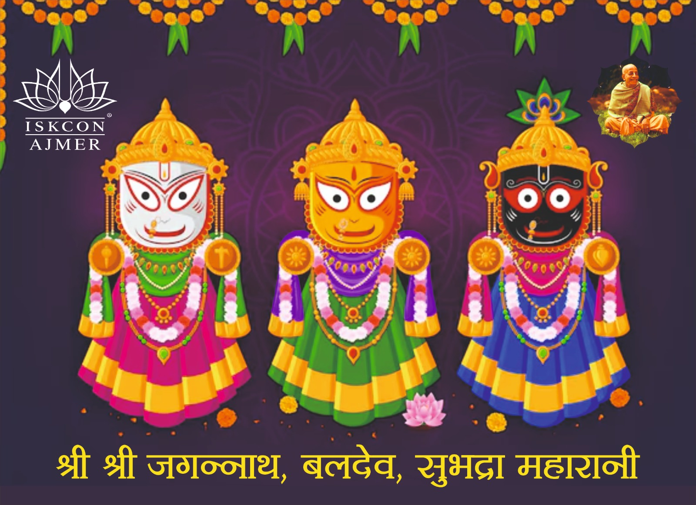
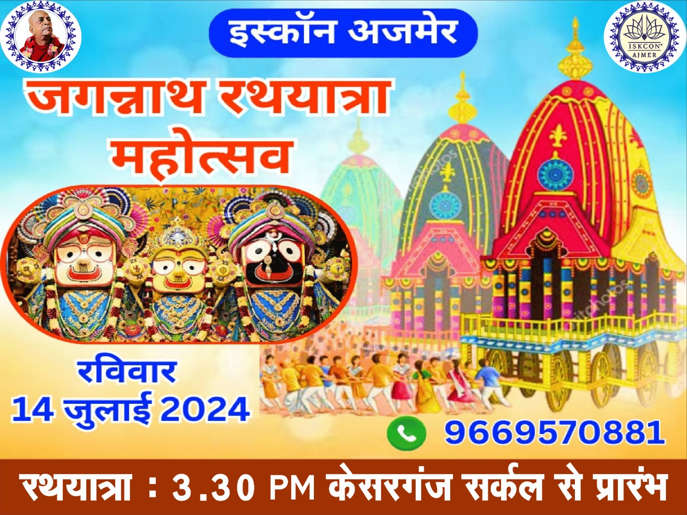
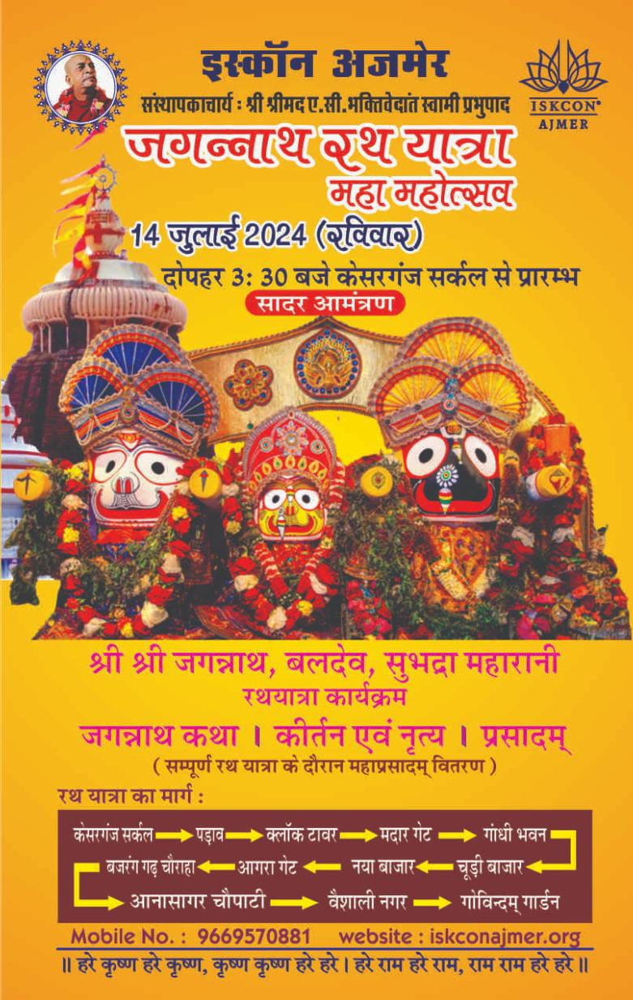
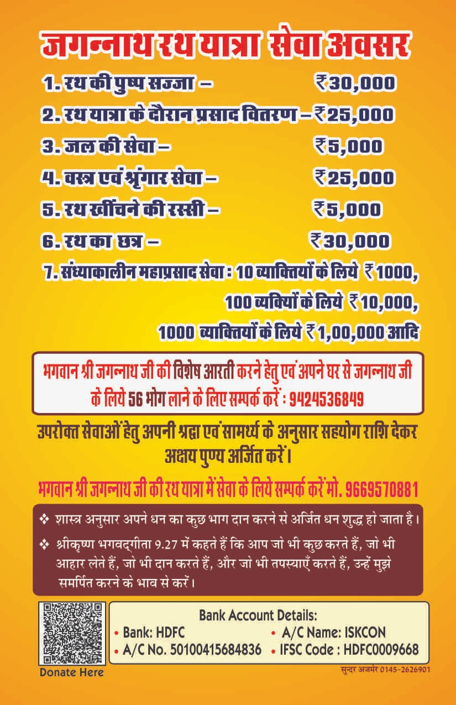

ISKCON Ajmer
Jagannath Rath Yatra 2024

About Jagannath Rath Yatra
At the height of Indian summer, right at the beginning of the Monsoon, the Lord of Puri goes to his garden palace for the annual summer vacation. Originally the festival has its foundation in the residents of Vrindavan bringing back their Lords, Krishna, Balaram and Lady Subhadra from Kurukshetra.
Today in Puri He, the Lord of the Universe travels in some style from his temple in Puri, to his garden temple, located outside the town centre called Gundicha. Thousands of Hindus flock to see, and to pull the grand chariots from one temple to the other. The English word "Jagannaut" comes from the giantchariots of Lord Jagannath of Puri. The British were so stunned by the size of the chariots, they coined a word for it!

In Puri, Lord Jagannath is worshipped with his elder brother Bala-Rama and his sister Subhadra. Each sibling has his / her own chariot and goes to the summer residence with great pomp. Each of the chariots is covered in distinctly coloured cloth. Various symbols and signs help pilgrims distinguish between the three gods. As a mark of respect, and humbleness, the king of Puri sweeps the chariots of the Gods of Puri. Festival begins with a huge fanfare of conches, trumpets, drums and cymbals. Accompanied by music and dancers, the divine travellers begin their journey to the garden temple.
In order to accommodate the three chariots, the street leading from the main temple to the garden temple is very wide. Temples, ashrams, hotels, inns, shops and mansions of the old aristocracy line the route. All buildings are colourfully decorated with flags, buntings and awnings of bright colours. Ladies in colourful saries crowd the balconies, doors and windows decked with flowers. Men and women rush to pullthe chariots along this main street of Puri. This is an exciting time in Puri. The Lord who is rarely glimpsed outside his inner sanctum, is now easily accessible to everyone in the streets of Puri !
Away from the hustle and bustle of the city, away from the innumerable temple servants, away from their spouses, the siblings enjoy their "Vrindavan-like" garden retreat. The temple routine in the garden temple is very much relaxed compared to the main temple. Various festivities and fun are planned for their short stay in this leafy abode. ( Depending on the lunar cycle, this festival can last anywhere from 1 - 2 weeks. )
As the Lord has only taken his brother and his sister on this holiday, the wives are left at home! Alone and brooding, Goddess Lakshmi (Goddess of wealth), seeks help from Goddess Vimala to get their husband back. Travelling by night, in a closed palanquin, she arrives at the garden temple of the Lord. She enchantsthe Lord and entreats him to return.
A few days later, Lord returns to his city temple. Though delighted, goddess Lakshmi orders the temple doors to be shut in His face - in the vain hope of teaching Him a lesson! In the conversation that follows, female attendants (dev-dasi) of the Goddess blame the Lord of being inconsiderate, "Jack the Lad", taking His wife for granted and being far too easily led by the in-laws (sounds familiar?).
The mood of the sevaks in Puri is that Jagannath is their friend as opposed to Him being their Master, as in other lilas. In many cases the residents of Purushottam Shri Kshetra make many comparission with their own lives in dealing with Jagannath. These intimacies reflect the overall mood, and carry the tradition of heritage of Jagannath's original coming to Puri many thousands of years before and the wonderful pastimes of the saintly Indradyumna maharaj vision of the Lord, Visvavasu the Sabara's attachment to the Lord as Nila Madhav, and finally the mystical appearance of the Dharu-Brahma from which the first Deities were carved by the architect of the devas Vishvakarma, the mystical carrying of the log by the descendant of Visvavasu (Virabhadra) that many elephants and men could not budge. Such wonderful depictive pastimes make one's hair stand in horipulations at their recitation.
Today in Puri Lord's servants explain that He really had no choice, as they bring Him back that He went against His will, He still loves Her deeply and respects Her enormously!! Eventually, the Lord offers the female gate-keepers bribess and enters the inner sanctum to pacify the Goddess Lakshmi. Such are the dramas of a married man's life! The next day, Lord and the Goddess once again appear in the public, reconciled and as loving as ever. Lord's summer vacation is over, and life in the great temple returns to its age old routine.

Of all the festivals, the Ratha Yatra of Jagannatha is the most famous. This takes place on the second day of the waxing phase of the moon of the asadha month. Jagannatha ordered King Indradyumna to take him to his birth place, the Gundica Mandira (symbolically Vrindavana), on this day.
Jagannatha's ratha is marked with a cakra and garuda, is yellow in color, with four white horses. The protecting deity is Nrsimha.
Baladeva's cart is blue, with a palm tree insignia, and four black horses. The protecting deity is Sesa.
Subhadra's cart is black, with lotus insignia, protected by Vanadurga.
Sudarsana is carried out first and placed on Subhadra's cart. In succession Subhadra, Baladeva, and Jagannatha are moved to their carts using silk ropes. After being situated on their carts they are decorated and worshipped. Midway on the journey, the carts stop, the deities are bathed in pancamrta and cool water, and naivedyam and aratrika are offered. On arrival at the Gundica Mandira, aratrika is offered, and then the deities enter the temple for rest.
On the fifth day of the lunar month, called Hera (looking for) Pancami, Laksmi comes looking for Jagannatha with Siva and her maid servants. When the servants of Jagannatha see her at the first gate of the Gundica Mandira, they close the door of Jagannatha's bhoga mandira so that she cannot see him. She becomes angry and breaks a piece of Jagannatha's ratha. After taking a meal she returns to the main temple.
On the ninth day of the moon, the return Ratha Yatra takes place, and Laksmi and her servants come to meet Jagannatha. Jagannatha gives her his garland to appease her.
Several days later on dvadasi, Laksmi closes the temple doors in anger and her servants quarrel with Jagannatha's servants. Aft
Jagannatha concedes defeat, the doors are opened again.
Such is the reverance, the fun, the mysticism, and overall bliss of Rathyatra in Jagannath Puri.
Benefits of attending rath yatra
जगन्नाथ स्वामी नयन पथगामी भवतु मे !
वर्षभर भगवान जगन्नाथ के अर्चविग्रह की पूजा दिव्य मंदिरों में की जाती है। पूरे वर्ष में एक बार भगवान जगन्नाथ अपने दिव्य मनमोहक रूप में संपूर्ण जगत के प्राणियों को अपने दुर्लभ दर्शन से कृतार्थ करने हेतु स्वयं मंदिर से बाहर आते हैं। भगवान की यही लीला "भगवान जगन्नाथ रथयात्रा" के नाम से विश्व प्रसिद्ध है। भगवान जगन्नाथ के रथ को खींचने से अप्रत्याशित आध्यात्मिक लाभ प्राप्त होता है।
॥ रथे तु वामनम दृष्ट्वा पुनर्जन्म न विद्यते ॥
वैदिक शास्त्रों के अनुसार रथ यात्रा के दौरान रथ पर सवार भगवान जगन्नाथ के दर्शन करने से हम जन्म-मृत्यु के चक्र से मुक्त हो जाते हैं।


Cordial invitation for Jagannath Rath Yatra 2024 on July 14 by ISKCON AJMER
आदरणीय बन्धुवर,
🦚 हरे कृष्ण 🦚
कृपया प्रणाम स्वीकार करें !
श्री श्री राधा माधव की जय !
श्री श्री जगन्नाथ बलदेव सुभद्रा महारानी की जय !
श्रील प्रभुपाद की जय !
आप के सक्रिय सहयोग से पिछले 3 वर्षों से इस्कॉन अजमेर द्वारा जगन्नाथ रथ यात्रा का आयोजन किया जा रहा है, जिसमें देश-भर से भक्तगण सम्मिलित होते हैं। आपके सहयोग से इस बार भी हम अजमेर में भव्य रथयात्रा का आयोजन कर रहे हैं।
इस महोत्सव के मुख्य आकर्षण होंगे:
- विशेष आरती
- 56 भोग अर्पण
- मधुर हरिनाम संकीर्तन
- भक्तिमय नृत्य
- पुष्प वर्षा
- आकर्षक झाकियां
- महाप्रसाद वितरण
हमारी आप से विनीत प्रार्थना है कि आप अपने परिवार तथा मित्रों सहित इस भव्य रथयात्रा में अवश्य पधारें तथा कार्यक्रम के उत्सवों में भाग लेकर दिव्य आनन्द प्राप्त करें।
हरे कृष्ण
आपकी प्रतीक्षा में
इस्कॉन अजमेर
Contact: 9669570881